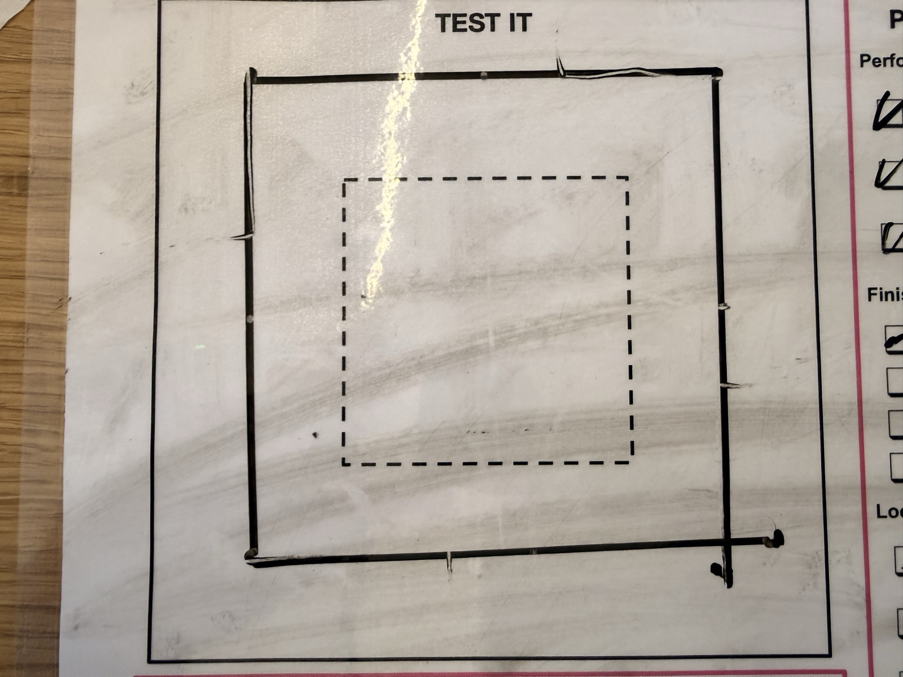
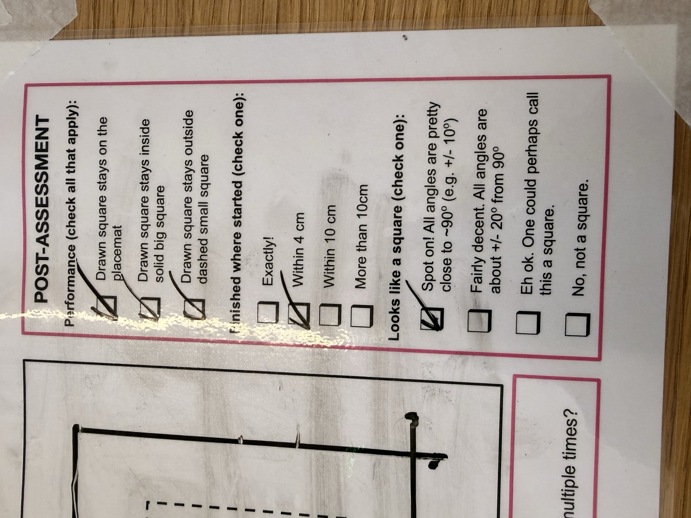

04 M — Sheet 10 / 10
Attach a pen and draw a perfect square.

The task: attach a pen to the robot and draw a perfect square. Straight sides, exact 90-degree corners, and you have to decide where the pen sits relative to the wheels and how to control the driving.
My answer to the straight sides was the gyro. The hub knows which way the robot is pointing, so instead of trusting the two wheels to run even, the code checks the heading every 10 milliseconds while driving and steers back toward the right direction. A wheel that starts late, a bit of slip, whatever's left over from the last corner, it all gets fixed on the move.
The corners come from the same sensor. Each side has a fixed target direction measured from the start (0, 90, 180, 270 degrees), so a sloppy corner can't leak into the next side. The turn spins fast through most of the corner, slows down for the last 15 degrees, and stops 1.5 degrees early because the robot keeps sliding a little after the wheels lock.
The program was written with Claude's help, and the code says so in its first lines. It also prints what it measures while it drives: how many centimeters each wheel rolled on every side, and how many wheel degrees each corner cost per degree the robot actually turned, which tells you if the wheels slipped.

The results are on the card's own checklist: the square stayed on the placemat, inside the big printed square and outside the dashed one. The robot finished within 4 cm of where it started, and the angles came out close enough to 90 that the card's top box ("spot on") is the one checked.
Still to add: whether I ran the reliability challenge (tracing the same square more than once).
# Draw a square with a SPIKE Prime robot.
# Setup: left drive motor on port E, right drive motor on port A.
# Generated with the assistance of Claude, on October 5, 2026.
from hub import port, motion_sensor
import runloop
import motor_pair
import motor
# The hub measures angles in DECIdegrees (tenths of a degree): 900 = 90.0
# degrees. On this hub, turning LEFT makes the reading go UP.
SIDE_LENGTH_DEGREES = 240 # how long each side is (degrees of wheel rotation)
FORWARD_SPEED = 180 # top driving speed (degrees per second)
START_SPEED = 60 # speed at the very start and end of each side
STEER_GAIN = 1.5 # how hard to steer back toward the right direction
MAX_FIX = 50 # the most steering can change a wheel's speed
WHEEL_DIAMETER_MM = 56 # first number printed on the tire (e.g. 56 x 14)
FAST_TURN_SPEED = 100 # turning speed for most of the corner
SLOW_TURN_SPEED = 50 # turning speed for the last few degrees
SLOW_ZONE = 150 # start going slow 15 degrees before the target
STOP_EARLY = 15 # stop 1.5 degrees early; the robot slides the rest
DEBUG = True # print what the robot measures (False = quiet)
def log(*args):
if DEBUG:
print(*args)
def error_to(target):
# How far the robot is from pointing at "target", in decidegrees.
# Positive = turned too far left, negative = not far enough.
# The hub's reading jumps from +180 to -180 degrees; the % undoes that.
reading = motion_sensor.tilt_angles()[0]
return (reading - target + 1800) % 3600 - 1800
def wheels():
# How far each wheel has rolled FORWARD so far, in degrees: (left, right).
# The left motor is mounted mirrored, so its number is flipped.
return (-motor.relative_position(port.E), motor.relative_position(port.A))
def cm(degrees):
# Turn wheel degrees into centimeters rolled.
return round(degrees * 3.1416 * WHEEL_DIAMETER_MM / 3600, 1)
async def drive_straight(heading):
# Drive one side while the gyro keeps the robot pointing at "heading".
# Every 10 ms: if the robot points a little to the left, speed up the
# left wheel and slow down the right one (and the other way around).
# This fixes a wheel that starts late, a wheel that slips, and the small
# mistake left over from the last turn, all while the robot is moving.
left0, right0 = wheels()
while True:
left, right = wheels()
rolled = ((left - left0) + (right - right0)) / 2 # average of both wheels
remaining = SIDE_LENGTH_DEGREES - rolled
if remaining <= 0:
break
# Start slow, speed up, and slow down again near the end of the side.
speed = min(FORWARD_SPEED, START_SPEED + 2 * rolled, START_SPEED + 2 * remaining)
# Steer: a positive error means the robot points too far left.
fix = error_to(heading) * STEER_GAIN
fix = max(-MAX_FIX, min(MAX_FIX, fix))
motor_pair.move_tank(motor_pair.PAIR_1, int(speed + fix), int(speed - fix))
await runloop.sleep_ms(10)
motor_pair.stop(motor_pair.PAIR_1, stop=motor.HOLD)
await runloop.sleep_ms(300) # wait until the robot is completely still
async def turn_left_to(target):
# 1. Spin left at normal speed for most of the corner.
motor_pair.move_tank(motor_pair.PAIR_1, -FAST_TURN_SPEED, FAST_TURN_SPEED)
while error_to(target) < -SLOW_ZONE:
await runloop.sleep_ms(5)
# 2. Slow down for the last 15 degrees.
motor_pair.move_tank(motor_pair.PAIR_1, -SLOW_TURN_SPEED, SLOW_TURN_SPEED)
while error_to(target) < -STOP_EARLY:
await runloop.sleep_ms(5)
# 3. Stop and lock the wheels in place. Whatever small mistake is left,
# the next side fixes while driving.
motor_pair.stop(motor_pair.PAIR_1, stop=motor.HOLD)
await runloop.sleep_ms(300)
async def main():
# If an earlier run was stopped before the end, the motors are still
# paired in the hub's memory. Unpair them first so pair() doesn't fail.
try:
motor_pair.unpair(motor_pair.PAIR_1)
except Exception:
pass
motor_pair.pair(motor_pair.PAIR_1, port.E, port.A)
# Let the robot sit still for a moment, then call its starting direction 0.
await runloop.sleep_ms(500)
motion_sensor.reset_yaw(0)
await runloop.sleep_ms(50)
# Side 1 points at 0, side 2 at 90, side 3 at 180 and side 4 at 270
# degrees to the left of the start. Every direction is measured from the
# START, so a mistake at one corner can't carry over to the next one.
for side in range(4):
heading = side * 900
log("side", side + 1)
log(" start: off by", error_to(heading))
left0, right0 = wheels()
await drive_straight(heading)
left1, right1 = wheels()
log(" wheels rolled: left", cm(left1 - left0), "cm, right", cm(right1 - right0), "cm")
log(" end: off by", error_to(heading))
# Turn the corner. Normally the wheels turn about 2 degrees for every
# degree the robot turns; a lot more than that means they slipped.
target = heading + 900
before = error_to(target)
await turn_left_to(target)
left2, right2 = wheels()
robot_turned = (error_to(target) - before) / 10
wheel_turned = ((left1 - left2) + (right2 - right1)) / 2
if robot_turned > 0:
ratio = round(wheel_turned / robot_turned, 2)
else:
ratio = "?"
log(" turn: wheels", wheel_turned, "deg, robot", robot_turned, "deg,", ratio, "wheel deg per robot deg")
log("back to the start direction: off by", error_to(0))
# Free the motor ports when finished.
motor_pair.unpair(motor_pair.PAIR_1)
runloop.run(main())